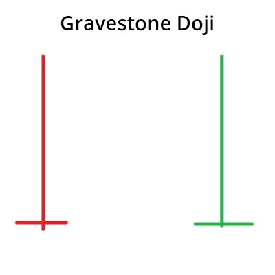

जब Gravestone Doji candlestick pattern ऊपरी उतारवाले के शीर्ष पर होता है, तो इसे एक बियरिश रिवर्सल के रूप में व्याख्या किया जा सकता है। Gravestone Doji ट्रेडर को दिखा सकता है कि एक मूल्य वृद्धि के लिए प्रतिरोध कहां होता है। यह आमतौर पर अन्य तकनीकी संकेतकों के साथ उपयोग किया जाता है ताकि एक संभव उत्तरोत्तर शीर्ष का पता लगाया जा सके।
| Gravestone Doji कैसा दिखता है ? |
ग्रेव्स्टोन डोजी चार्ट पैटर्न एक उल्टा “T” आकार की कैंडलस्टिक होती है जो बनती है जब खुले, ऊंची और बंद कीमतें लगभग बराबर होती हैं। ग्रेव्स्टोन डोजी का सबसे महत्वपूर्ण हिस्सा लम्बी ऊंची वाली शाखा होती है।
| Examples of Gravestone Doji |
Adani Ports
आदानी पोर्ट के डेली चार्ट में हम 22.05.2015 की तारीख पर एक ग्रेव्स्टोन डोजी गठन देख सकते हैं। डोजी का गठन 300 से 348 के स्तरों से पूर्व उच्चतम लेवल से हुए एक उपट्रेंड के साथ हुआ था।
यह एक तेजी से बढ़ती मुवमेंट थी जिसमें एडानी पोर्ट्स के डेली चार्ट में हम 22.05.2015 की तारीख पर एक ग्रेवेस्टोन डोजी के फॉर्मेशन को देख सकते हैं। डोजी 300 से 348 के स्तरों से पूर्ववत उठान के साथ बना था। यह 16 प्रतिशत की एक रैली थी और ग्रेवेस्टोन डोजी के फॉर्मेशन के बाद, स्टॉक 350 के स्तर से 298 के स्तरों तक गिरा जो लगभग 15 प्रतिशत का एक गिरावट था।
Andhra Bank:

यह एंध्रा बैंक का डेली चार्ट एक और डोजी पैटर्न का उदाहरण है। 68 स्तर से लगभग 7% की पूर्व उद्देश्य तक पहुंचने के साथ, यह 73 पर एक डोजी बनाता है और फिर अपने रुझान को बदलता हुआ 69 के स्तरों पर वापस चला जाता है।
| Chart Example 1 |
| Chart Example 2 |